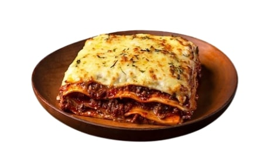
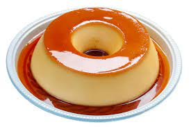

Receitas do Chefe

Lasanha à Bolonhesa
- 500g de massa para lasanha
- 500g de carne moída
- 1 cebola picada
- 2 xícaras de molho de tomate
Modo de Preparo: Cozinhe a massa, refogue a carne e a cebola, adicione o molho de tomate, monte a lasanha e asse por 30 minutos.

Bolo de Chocolate
- 2 xícaras de farinha de trigo
- 1 xícara de cacau em pó
- 1 xícara de açúcar
- 2 ovos
Modo de Preparo: Misture os ingredientes, asse em forno pré-aquecido a 180°C por 30 minutos.

Pudim de Leite Condensado
- 1 caixinha de leite condensado
- A mesma medida de leite
- 1 xícara de chá de açúcar
- 3 ovos
Misture tudo até que fique bem homogêneo. Adicione a mistura na forma com a calda e cubra com papel alumínio, leve para o Forno dentro de uma forma com 2 dedos de água em banho maria por uma hora a 180ºC